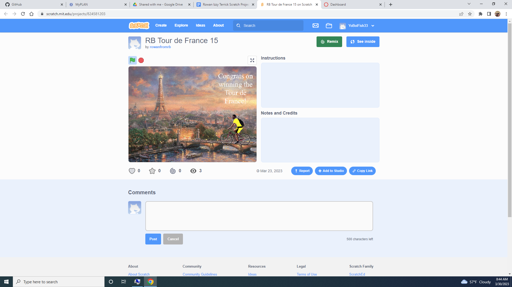

Home
Portfolio
About Me
This is my Portfolio Page!

Minion Tic Tac Toe Project.

The game we created is a very universal game of Tic Tac Toe but with a Minions theme. You will either be using an O or an X against one of your friends. Click on the square you want to place your shape. Be competitive and have fun! We met the requirements by creating loops for the X's/O'S and animated the drawing board.
NASCAR race game project.

The game we created is a NASCAR game where you will use the arrow keys to move the car around the track in 30 seconds as fast as you can. Try your best and have fun! We met the requirements by having a timer and a car that moves around the track.
Scratch Project.

The game we created is a bike race where you tour france and get to the checkpoints. Using the arrow keys the user will navigate the biker throguh several course backgrounds until you reach the final end credit screen which concludes the race. We met 7 out of the 10 requirements which were Animation, counter, Multiple Backgrounds, Change of costume, Sounds, Event, and Input.
3.2.4 project

Here is one of the graphs of the honey data in each U.S. State. Overall interesting project for us.
4.1.4 project

Here is one of the pictures from the sheep and wolves simulator that we did.
Modified bits in pictures.
Use data files to create graphs.
Using netlogo do remix of illusions.
Interactive Fiction Rags to Riches.